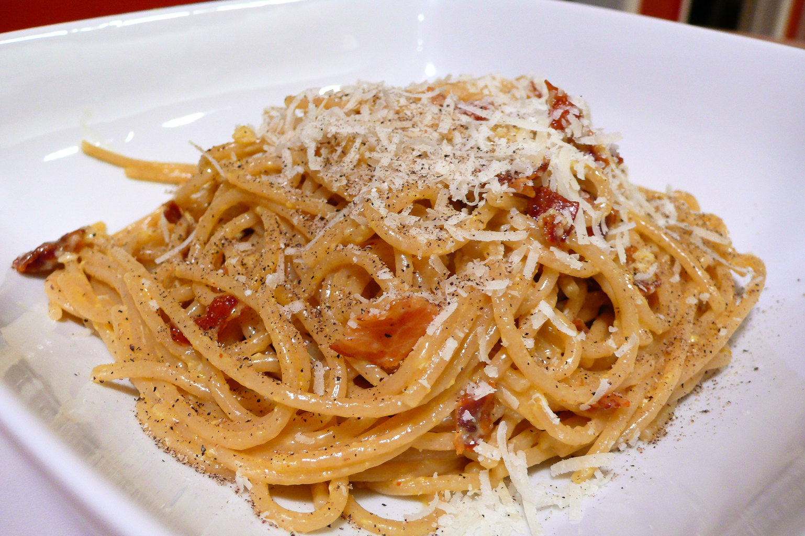
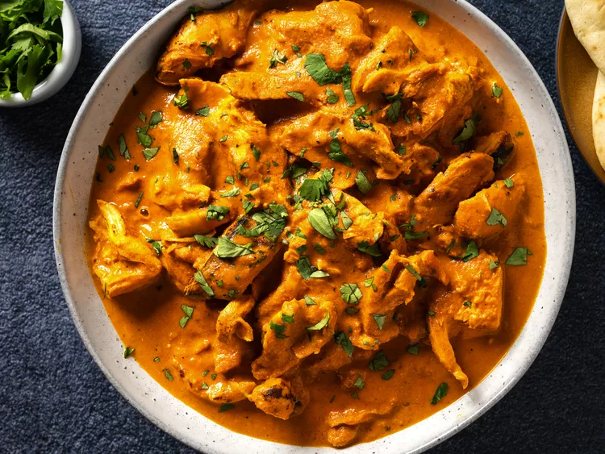

Spaghetti Carbonara

Ingredients:
- 200g spaghetti
- 100g pancetta or guanciale, diced
- 2 large eggs
- 50g grated Pecorino Romano cheese
- 50g grated Parmesan cheese
- Black pepper, freshly ground
- Salt (for pasta water)
Instructions:
- Bring a large pot of salted water to a boil and cook spaghetti according to package instructions.
- While pasta is cooking, cook pancetta in a large skillet over medium heat until crispy.
- In a bowl, whisk together eggs, Pecorino Romano cheese, Parmesan cheese, and a generous amount of black pepper.
- Drain spaghetti, reserving some pasta water. Immediately add hot pasta to the pancetta in the skillet and toss to coat.
- Remove skillet from heat and quickly stir in the egg mixture, tossing continuously until creamy (add reserved pasta water if needed to loosen).
- Serve immediately with additional grated cheese and black pepper.
Chicken Tikka Masala

Ingredients:
- 500g boneless, skinless chicken thighs, cut into bite-sized pieces
- 1 cup plain yogurt
- 2 tbsp vegetable oil
- 1 onion, finely chopped
- 3 garlic cloves, minced
- 1 tbsp ginger, grated
- 2 tsp ground cumin
- 2 tsp ground coriander
- 1 tsp turmeric
- 1 tsp paprika
- 1/2 tsp cayenne pepper (adjust to taste)
- 1 cup tomato puree
- 1 cup heavy cream
- Salt and pepper to taste
- Fresh cilantro leaves for garnish
Instructions:
- In a bowl, combine yogurt with spices (cumin, coriander, turmeric, paprika, cayenne pepper).
- Add chicken pieces to yogurt mixture, coat well, and marinate for at least 1 hour (preferably overnight).
- Heat oil in a large skillet over medium heat. Add onions and cook until softened.
- Add garlic and ginger, cook for another minute until fragrant.
- Add marinated chicken and cook until browned.
- Stir in tomato puree and heavy cream. Simmer until chicken is cooked through and sauce thickens.
- Season with salt and pepper to taste. Garnish with fresh cilantro leaves before serving.